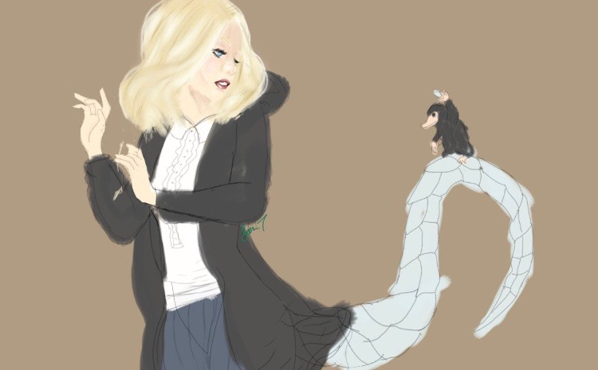

What's a Mederi?
In Latin Mederi means "to find a cure" or "to remedy."
A Mederi is a special witch or wizard with the ability to shift into a magical beast. For example a dragons, a unicorn, a pheonix, etc. each beast a Mederi is destined to be coralates with their background and personailty unless created.
